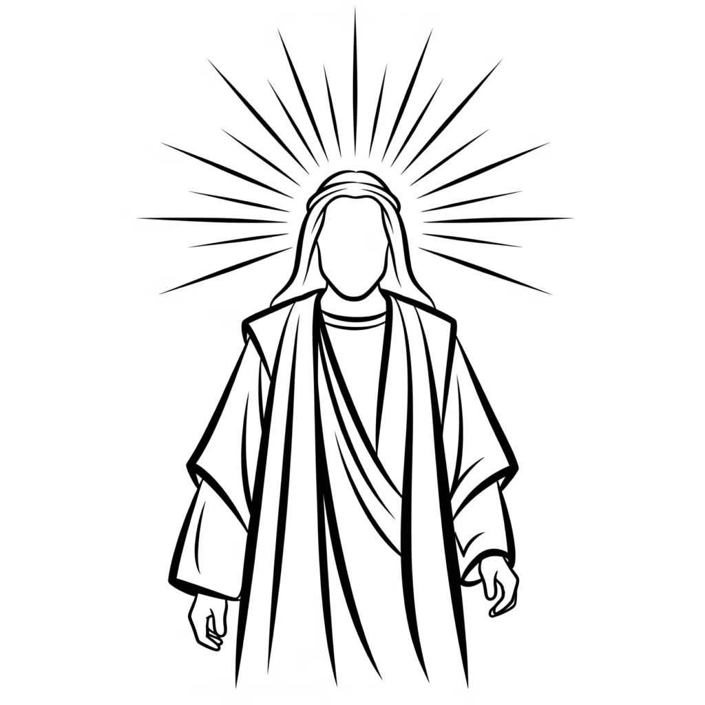

"And God said, Let us make man in our image, after our likeness." (Genesis 1:26)
On the surface this appears to be a simple account of creation. Read through the governing structure of consciousness, it is the most precise statement in all of Scripture about how identity is formed. The creation of man is not a one-time historical event — it is the ongoing mechanism by which YHVH/LORD assumes an identity as Ehyeh/I AM, and Elohim enforces it. Every element of the verse discloses a specific part of that mechanism.
Exodus 3:14 establishes the governing name: "Ehyeh/I AM Asher Ehyeh/I AM." From this declaration the full operational structure is revealed: Elohim — the judges and rulers of I AM — is the governing plurality that enforces whatever identity YHVH/LORD occupies as I AM. Genesis 1:26 is that structure creating its primary instrument: man, the assumed identity itself, made in the image and after the likeness of the governing I AM.
"In Scripture, every male and female character is a personification of a state of mind. They are not separate beings but reflections of one consciousness — the creative principle named God, meaning the judges and rulers of I AM."
Man As Assumed Identity
The Hebrew word translated "man" is adam, connected to adamah — ground, earth, the substance from which form arises. Man is not the physical body. Man is the assumed identity: the self-concept that YHVH/LORD (present consciousness) occupies as Ehyeh/I AM, which Elohim then enforces into outer form. The ground is the field of consciousness; man is what grows from it when an identity is assumed and held.
The phrase "in our image, after our likeness" discloses the two stages of enforcement. Image is the inner form — the identity as it exists within consciousness, shaped by the assumed I AM. Likeness is the outer expression — the lived reality that Elohim produces in conformity with the inner image. This is the same structure as Genesis 1:11: every seed bears fruit after its kind. What is assumed inwardly as I AM is the seed; the outer life is the fruit Elohim enforces after its kind. The image precedes the likeness; the inner assumption precedes the outer manifestation.
Colossians 1:15–16 names the same principle from within the New Testament:
"He is the image of the unseen God, coming into existence before all living things; for through him all things were made, in heaven and on earth, things seen and things unseen, authorities, lords, rulers, and powers; all things were made by him and for him." (Colossians 1:15–16)
The image of the unseen God — the assumed I AM — precedes and generates all things seen and unseen. The authorities, lords, rulers, and powers named here are Elohim: the governing plurality of consciousness that enforces the assumed identity into all dimensions of experienced reality.
The "US": Elohim as the Inner Government
"Let us make man" — the plural is not incidental. Elohim is grammatically plural throughout Genesis 1: judges, rulers, powers. The "us" is not a council of external beings. It is the inner government of consciousness — the organised plurality of the inner Elohim deliberating on the identity to be created and enforced.
Genesis 1:26 is therefore the courtroom of consciousness making its ruling: Elohim — the judges and rulers of I AM — agree on the identity to be formed and decree its enforcement. The verdict is: man shall be made in our image, after our likeness. Once the inner government pronounces this, Elohim is bound to enforce it. The assumed identity becomes the creative unit. Everything YHVH/LORD occupies as I AM, Elohim must uphold.
Exodus 3:14 names the foundation of that government: "Ehyeh/I AM Asher Ehyeh/I AM." I AM is the eternal governing name. What follows I AM — whatever identity is appended to it — is what the inner Elohim must enforce. Genesis 1:26 shows the mechanism by which that enforcement produces man: the assumed self, formed in the image of the governing I AM and expressed outwardly as its likeness.
The Garden: Consciousness As The Field of Formation
Genesis 2 extends the mechanism into its relational dimension. Where Genesis 1 (Elohim) establishes the mechanics and statutes of creation, Genesis 2 (YHVH/LORD Elohim) shows consciousness in active relationship with what it has formed:
"And the Lord God made a garden in the east, in Eden; and there he put the man whom he had formed." (Genesis 2:8)
The garden is the field of consciousness — the mind as the cultivated environment where the assumed identity is placed and tended. Eden means delight / pleasure: the natural condition of consciousness when the assumed I AM is in harmony with the governing Elohim. Man — the assumed identity — is placed in this garden to tend, name, and direct its contents.
The naming of the animals in Genesis 2:19–20 is Elohim enforcing the dominion declared in Genesis 1:26. To name is to define the nature of a state — the same mechanism as Thread 8: names reveal the nature of what is assumed, and Elohim enforces the outcome the name declares. Man's authority in the garden is the authority of the assumed I AM over every inner state: every impulse, every perception, every faculty of the inner government is named and thereby governed.
Names As Encoded Identities: The Men And Women Of Scripture
The naming of the animals in Genesis 2:19–20 is not an isolated act of classification. It establishes the governing principle that runs through every name in Scripture: to name a thing is to declare the nature of the state it occupies, and Elohim enforces the outcome that nature encodes. Every man and woman named in the Bible carries their identity compressed within their name, and the narrative that follows is simply Elohim enforcing what the name already declared.
Adam (adamah — ground, earth) is not merely the first man. He is the identity formed from the ground of consciousness — the self-concept that arises when YHVH/LORD occupies the most basic I AM: I exist, I am here, I am formed. The ground is the present state of awareness; Adam is what that awareness produces when it assumes an identity. Elohim enforces the nature of the ground: from earth, to earth — the identity formed from unexamined, ungoverned awareness returns to its source unless a higher I AM is assumed in its place.
Eve (chavah — living, life-giver) is the identity assumed as the source of living experience. She is not a separate being from Adam but the I AM extended into relationship — the assumed identity finding its expression in the living world it generates. The name encodes the verdict: from this identity, life comes forth. Elohim enforces the nature of the state: Eve is the mother of all living (Genesis 3:20) because the identity she represents is the one that generates experience. What YHVH/LORD assumes as the living I AM, Elohim enforces as the living world.
The pattern holds through every name in the narrative. Abraham (father of many) — the state contains multiplication; Elohim enforces after its kind. Sarah (princess / noblewoman) — the identity assumes nobility and authority; Elohim enforces the birth of the promised state through her. Isaac (laughter / joy) — the state is delight before the evidence; Elohim enforces joy as the nature of what is born from faith. Jacob (supplanter) becomes Israel (he who prevails / rules as God) — the renaming is the mechanism: YHVH/LORD replaces one I AM with another, and Elohim enforces the new name from that point forward.
The women of Scripture carry the same encoding. Rebekah (to bind / tie) is the faculty that binds the assumption in place — she ensures Jacob receives the blessing, the old identity yields, and the new one is established. Rachel (ewe / she who travels) is the beloved state pursued across long labour — the identity YHVH/LORD will not relinquish regardless of the cost; Elohim enforces the union after the full measure of devotion is given. Leah (weary / tender-eyed) is the state already present but not yet consciously chosen — the faculty already serving the inner government, producing fruit even before it is valued.
In the New Testament the same principle holds without exception. Mary (beloved / exalted) carries the identity from which the governing I AM is born into the world. Elizabeth (my God is an oath / my God is abundance) is the state that confirms the assumption before it is visible — she recognises the governing identity before it has manifested outwardly (Luke 1:41–43). Peter is renamed from Simon (he who hears) to Petros (rock) — the hearing faculty elevated into the foundational faculty; Elohim enforces the rock once the new name is occupied.
The name is never incidental. It is the compressed declaration of the identity being assumed, and the story that follows is Elohim executing the verdict the name encoded before the first event of the narrative occurred. To read the names of the men and women of the Bible is to read the verdicts of the inner Elohim announced in advance.
Dominion: Mastery Over The Inner Government
"Have dominion over the fish of the sea and over the birds of the heavens" — this dominion is not authority over the external natural world. It is authority over the inner one. Fish in Scripture consistently represent the mind's depths — states and impulses operating below the surface of conscious awareness. Birds represent thoughts that move through the mind without being governed — the fleeting, the transient, the passing impression.
Man made in God's image — the assumed identity formed by the inner Elohim — is given dominion over both. The mind's depths and the surface thoughts are both subject to the ruling I AM once it is consciously assumed and held. Luke 5:10 names the extension of this dominion:
"Do not be afraid; from now on you will be catching men." (Luke 5:10)
To catch men is to gather the scattered faculties of the inner Elohim — the twelve, the Legion, the divided inner government — under the one governing I AM. Thread 4 (Plurality): the Shepherd gathers the sheep into one fold. Elohim enforces the unified identity once dominion is assumed.
Esau and Jacob: Image And Likeness As Mechanism
The story of Esau and Jacob demonstrates Genesis 1:26 in operation. Jacob puts on Esau's garments — the outer form of the firstborn, the one who carries the blessing. This is the precise mechanism of image and likeness: YHVH/LORD assumes the inner image of the one who already possesses the desired state, presents that identity to the issuing authority (Isaac / Elohim), and receives the enforcement of the likeness — the outer blessing — that corresponds to the image assumed.
Isaac's blessing, once spoken, cannot be revoked (Genesis 27:33) because Elohim enforces the identity presented to it. The outer man (Esau / present circumstance) does not determine the verdict. The inner assumed identity (Jacob / the image) does. The likeness — the outer life — must conform to the image that was presented to Elohim for enforcement.
Ephesians 4:22–24 names this transformation directly:
"Put away the old man… and be made new in the spirit of your mind, putting on the new man, which God has given life, in righteousness and true holiness." (Ephesians 4:22–24)
The old man is the former assumed identity — the image YHVH/LORD had been occupying, which Elohim had been enforcing. The new man is the identity now assumed in its place. The mechanism is identical to Jacob's assumption: leave the old garment, put on the new one, present the new image to Elohim. The inner government enforces accordingly.
Daniel And Solomon: The Journey From Perceiving to Becoming
Daniel's encounters with the fiery-eyed figure (Daniel 10:6) and Solomon's description of the Beloved (Song of Solomon 5:10–16) both trace the same arc that Genesis 1:26 establishes. Daniel's figure is the first encounter with the desired identity — YHVH/LORD beholding the I AM it has not yet fully assumed, overwhelmed by its reality. The outer man falls prostrate; the full assumption has not yet been occupied.
Solomon's Beloved — dove-eyed, radiant, altogether lovely — is the fully assumed state: YHVH/LORD and the I AM in the union of One Flesh (Thread 3). The image has become the likeness. The inner government has completed its enforcement. The journey from Daniel's vision to Solomon's union is the journey Genesis 1:26 describes: man being formed in the image of Elohim, moving through the stages of assumption until the likeness is fully expressed in lived experience.
Conclusion: The Creative Partnership Of Consciousness and Identity
Genesis 1:26 is the primary statement of the governing mechanism. Man — the assumed identity — is made in the image of Elohim: formed according to the inner judges and rulers of I AM, and expressed outwardly as their likeness. YHVH/LORD is the consciousness that assumes. Ehyeh/I AM is the identity occupied. Elohim is the inner government that enforces the image into the likeness.
Genesis 2:8 places this identity in the garden — the field of consciousness — to tend and name its contents. The naming is dominion; dominion is the authority of the assumed I AM over every state of the inner Elohim. Exodus 3:14 names the foundation: I AM is the governing name, and whatever is appended to it is what Elohim must enforce.
The image you hold within — the identity you occupy as I AM — is what the inner government of consciousness is bound to express as your outer likeness. This is not metaphor. It is the statute of creation declared in the first chapter of Genesis and enforced without exception by the judges and rulers of I AM.
"For in him we have life and movement and existence." (Acts 17:28)
About The Author | Genesis 1:26 Series | Law Of Identical Harvest